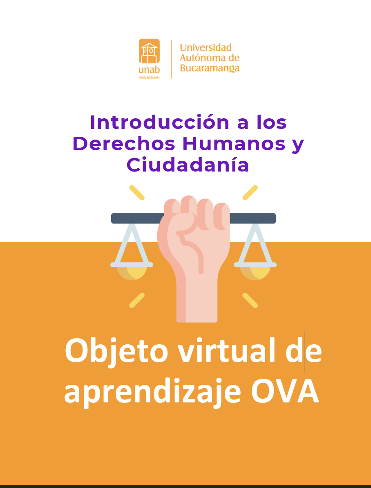
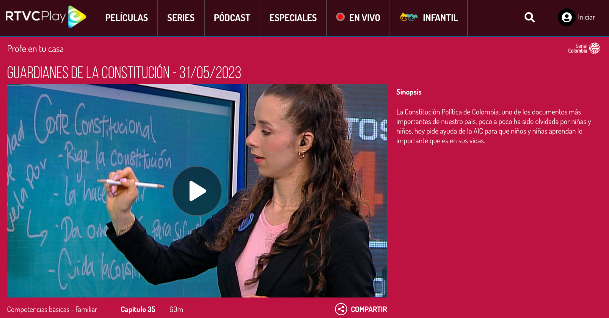

RED 1 — Introducción a los Derechos Humanos y Ciudadanía (OVA – PDF)
| Nombre del RED | Introducción a los Derechos Humanos y Ciudadanía (OVA) |
|---|
| Área de conocimiento | Ciencias Sociales / Formación ciudadana / Derechos Humanos |
|---|
| Nivel o grado de aplicación | Educación superior (Licenciatura); adaptable a educación media |
|---|
| Datos del autor(es) | Autoría institucional (UNAB). Universidad Autónoma de Bucaramanga. |
|---|
| Enlace al repositorio | https://repository.unab.edu.co/handle/20.500.12749/20613 |
|---|
| Enlace al RED | Acceso directo al PDF |
|---|
Descripción del RED
Recurso digital en formato PDF orientado a introducir fundamentos de Derechos Humanos y su articulación con prácticas de ciudadanía.
Es pertinente como insumo conceptual para análisis de casos, discusión argumentativa y articulación con marcos normativos del Estado social de derecho.
Características y posibilidades de uso
- Funciona como base conceptual para diseñar secuencias sobre ciudadanía, participación, convivencia y garantías de derechos.
- Facilita lectura guiada, organizadores gráficos y debates con rúbrica.
- Permite integración en LMS como lectura principal y soporte de talleres.
Limitaciones
- Formato no interactivo: la retroalimentación y la evaluación formativa deben diseñarse externamente.
- Accesibilidad a verificar (etiquetado del PDF, alternativas textuales en imágenes).
Verificación de estándares
- Accesibilidad: recomendable verificar compatibilidad con lector de pantalla y orden lógico del documento.
- Reusabilidad/Interoperabilidad: URL estable; no se evidencia empaquetado e-learning (p. ej., SCORM).
Captura de pantalla

RED 2 — Guardianes de la Constitución (RTVCPlay – audiovisual)
| Nombre del RED | Guardianes de la Constitución (recurso audiovisual educativo) |
|---|
| Área de conocimiento | Ciencias Sociales / Educación ciudadana / Constitución y democracia |
|---|
| Nivel o grado de aplicación | Educación superior (Licenciatura) con mediación docente; originalmente divulgativo |
|---|
| Datos del autor(es) | Autoría institucional (RTVCPlay/Señal Colombia). RTVC Sistema de Medios Públicos de Colombia. |
|---|
| Enlace al repositorio | https://rtvcplay.co/.../guardianes-constitucion |
|---|
| Enlace al RED | Acceso directo al recurso |
|---|
Descripción del RED
Recurso audiovisual divulgativo que introduce la relevancia de la Constitución Política en la vida cotidiana, articulando nociones de norma fundamental,
derechos y responsabilidades. En Licenciatura, su valor reside en analizar estrategias de comunicación pública y traducir contenidos a propuestas didácticas con mayor profundidad conceptual.
Características y posibilidades de uso
- Alta motivación como disparador de debate y análisis crítico.
- Articulación con lectura de artículos constitucionales y análisis de casos colombianos.
- Integración en evaluación formativa con guías, foros y rúbricas.
Limitaciones
- Baja interactividad: requiere actividades complementarias para retroalimentación y evidencias de aprendizaje.
- Accesibilidad a confirmar (subtítulos/transcripción y control de reproducción).
Verificación de estándares
- Accesibilidad: confirmar subtítulos y/o transcripción.
- Reusabilidad: alto potencial como mediador; requiere guía docente para objetivos y evaluación.
Captura de pantalla
